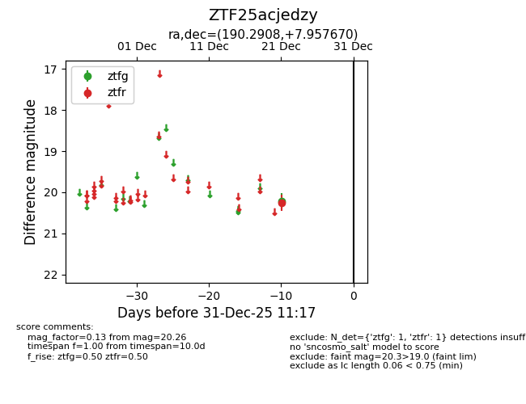
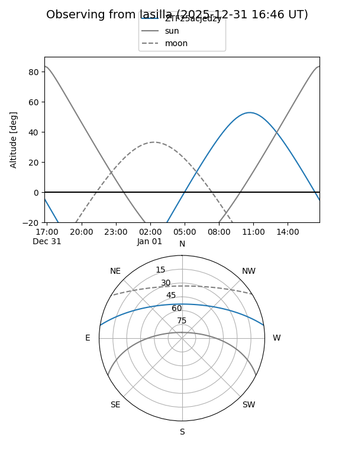
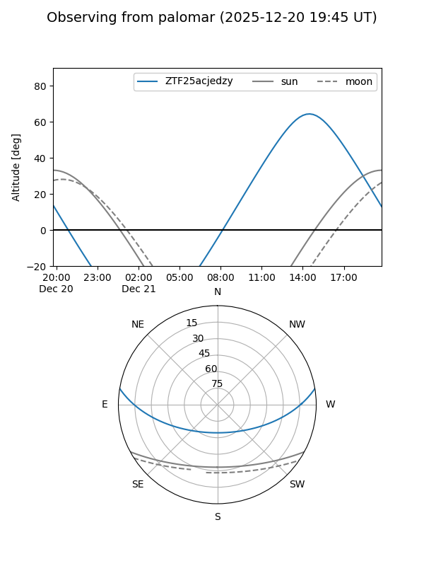

ZTF25acjedzy
Target ZTF25acjedzy at 2025-12-21 14:27
Aliases and brokers:
FINK: fink-portal.org/ZTF25acjedzy
Lasair: lasair-ztf.lsst.ac.uk/objects/ZTF25acjedzy
ALeRCE: alerce.online/object/ZTF25acjedzy
alt names
ZTF25acjedzy (ztf,fink_ztf)
Coordinates:
equatorial (ra, dec) = 190.2908,+7.95767
equatorial (HMS+DMS) = 12:41:09.78,+07:57:27.61
galactic (l, b) = (295.2236,+70.67548)
Flags:
Photometry:
last ztfg=20.22, ztfr=20.26
1 ztfg, 1 ztfr detections
Lightcurve

Visibility


Additional plots